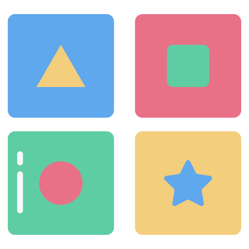

Juego de Memoria

Movimientos: 0
Tiempo: 0s
¿Cómo jugar?
- Selecciona la dificultad deseada.
- Haz clic en dos cartas para voltearlas.
- Si las cartas coinciden, permanecerán descubiertas.
- Si no coinciden, se volverán a ocultar.
- Encuentra todas las parejas en el menor tiempo posible.
¡Buena suerte y diviértete!
Acerca del Proyecto
Juego de Memoria es un proyecto educativo desarrollado como parte de la creacion de una Aplicación Web Progresiva (PWA). El objetivo es ejercitar la memoria y la concentración a través de un juego interactivo y divertido.
- Desarrollado por:
Michel Ashley - Fecha:
Mayo 2025 - Tecnologías:
HTML, CSS, JavaScript
Este proyecto fue creado con fines academicos. Para más informacion consulta el README.MD para saber más de este proyecto.
¡Juego completado!
Completaste el juego en movimientos y segundos.